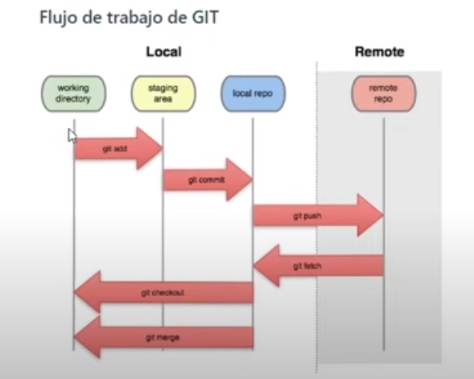

Para comenzar git se debe abrir terminal
Se abre un texto y saber la version que git que tenemos debemos escribir: 'git version'
Para empezar el (proyecto) "Repositorio" se hace con 'git init' y relaciona o vincula todos los archivos en un solo cuerpo integro. La ista de archivo se pinta de verde seguidad de una U (U = archivo no tiene seguimiento)
Para saber que archivos no tienen seguimiento utilizamos: 'git status -s'. Todos los que tienen ?? no tienen seguimiento.
Esos archivos están en el 'Directorio de Trabajo' (working directory), sin embargo listos a pasar al Area Temporal (staging Area)
Para hacer el seguimiento debemos pasar esos archivos al Area Temporal con: 'git add nombreArchivo'
Una vez añadido el index.html en el area temporal en la lista del archivo aparece como con una A (añadido al area temporal)
Agregamos alguna informacion mas al index.html, actualizamos y vemos su estado con: 'git status' index.html aparece como Modified. En la lista tiene una M (modificado)
Cuando hay una modificacion de una archivo en el area temporal o en el Repositorio el archivo vuelve al inicio (working Directory) y se les devuelve al area temporal con: 'git add nombreArchivo' y luego se hace otro commit
El commit agrega todo el o los archivos en area temporal al Repositorio
Pero este index.html modificado puede ya ser enviado a Repositorio con: 'git commit -m "nombreDelCommit'
Los otros archivos aún en Working directory pueden ser enviados al Area Temporal de una sola, en grupo con: 'git add .'
Podemos enviar un archivo , en este caso tutgit.css al Repositorio con: 'git commit -m "nombreCommit"'
Una vez dentro de Repositorio los archivos cobran su apariencia normal